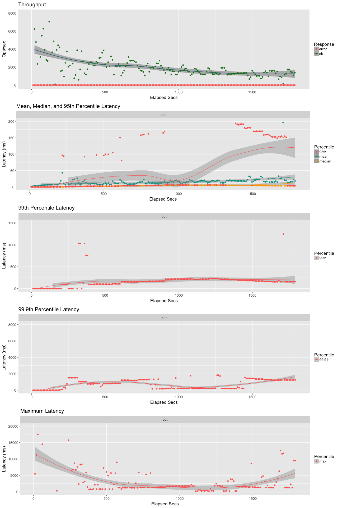
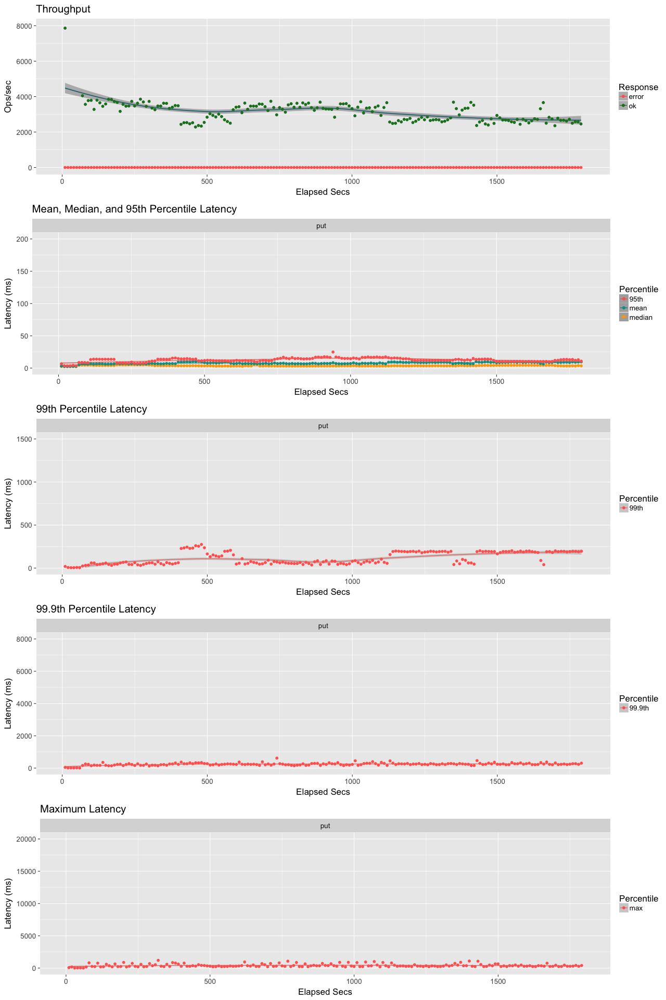
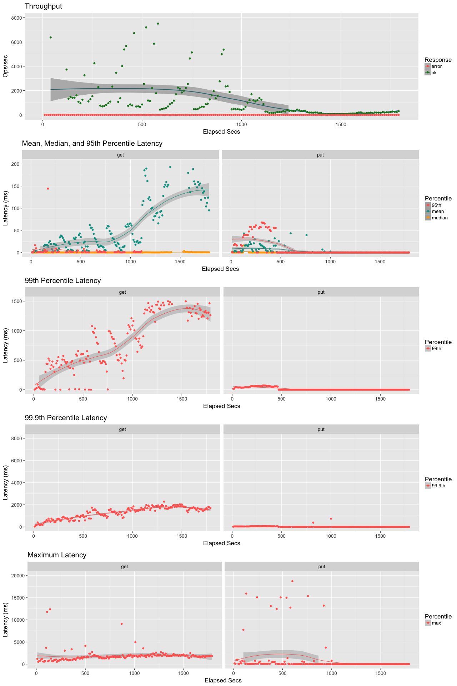
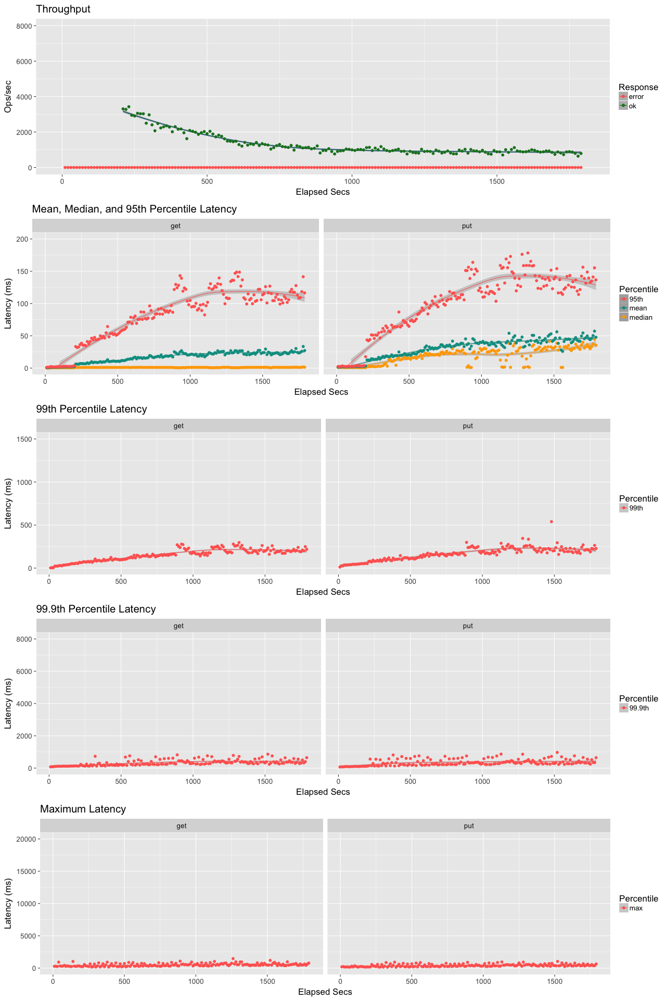

Leveled - Why?
Seeking a challenge
Didn't understand how LSM-Trees really worked ....
.... so try implementing one in Erlang
Leveled - The Hypothesis
The store only needs to support Riak ...
.... and with objects of a non-trivial size
Is it simpler to trade-off GET optimisation ....
.... for reduced write amplification?
What if the store natively supported a HEAD operation ....
.... and GETs could be avoided?

Leveled - The Key Changes
Make the nursery log a perpetual journal of changes
Roll only the Keys and Metadata into the merge tree
Use the Actor Model
All data compressed in PageCache - assisted by fadvise
Tolerate small delays - reduce variation
Leveled - The Inker and the Journal
The journal is a series of (DJ Bernstein) CDB files
The Inker has a manifest of PIDs -> FSMs -> Files
The Inker has a Clerk to help with compaction ....
.... Failure to compact does not block
.... Compaction is a lazy/scheduled background task
Leveled - The Penciller and the In-Memory Ledger
Skip Lists pushed from Bookie are then immutable
Hash-based lookup so that not all SkipLists need be checked
When count exceeds size of a sft file - persist to L0
Any fresh pushes returned until L0 complete
Once L0 complete and in the manifest, flush all _imm files
Leveled - The Penciller and Compaction
The Penciller has a clerk for compaction
The Clerk polls for work - a level with too many files
Max Files = 8 ^ Level
Choose a file, any file, at the highest overloaded level
Merge whole file to new files at level below - update manifest
Make replaced files delete_pending
Leveled - The Penciller Files
Files are FSMs - like Journal
Manifest maps levels/key-ranges to files
Files are sst like
Data is grouped in slots of 128 Keys
Slots contain 4 blocks of 32 keys (t_to_b compressed)
Bloom is single-hash gcs with in-built crc-style check
Single hash of bloom is also segment ID
Leveled - Clones
Penciller and Inker can be cloned
Clone needs a copy of memory, and the manifest
Clones are registered for files entering delete_pending
All folds via snapshot clones
Leveled - Status
Functionally complete backend
Initial integration testing into Riak (GET/PUT/2i/LIST)
Close to 100% test coverage
Still currently private
Leveled - Standalone Load Tests
Vanilla basho_bence for eleveldb
Tested on a desktop, so reduced instances to 12
Reduced value size to 8KB
... Populate (all PUT)
... Load (5 GET, 1 PUT)
Sync writes enabled in both cases
Leveldb .... .... Leveled
 Leveldb .... .... Leveled
 Leveled - Next Steps
Comparison test with unmodified Riak
Optimise GET & PUT FSM to use HEAD
Comparison test with modified Riak
Long-running tests
Release Alpha
Leveled - TODO List
Supervision
Property-Based Testing
AAE as-is
Investigate continuous AAE rebuild
Fold HEADs